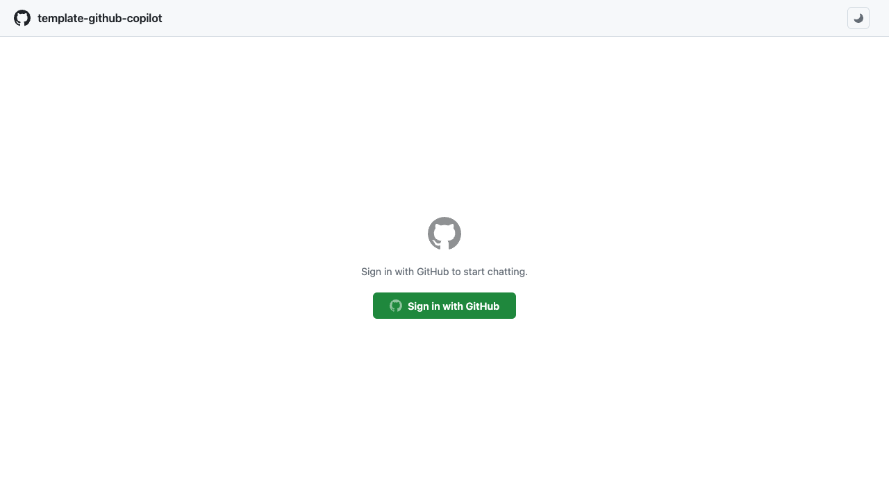
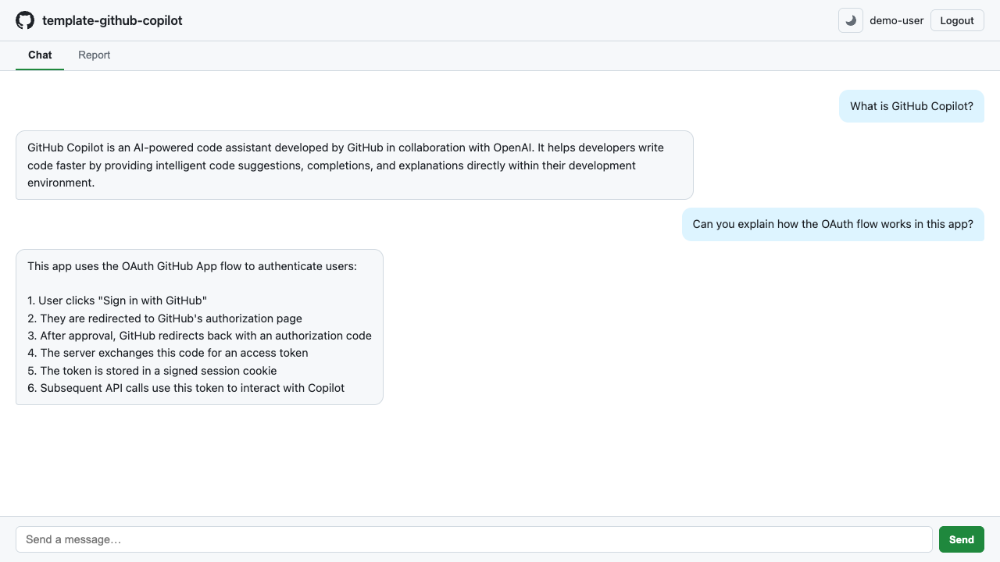
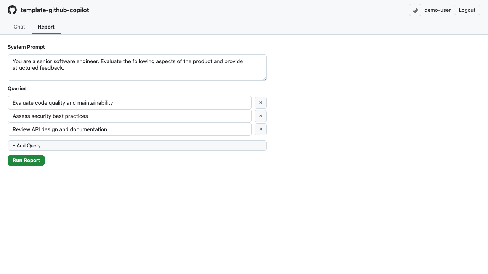

Web UI ガイド
概要
CopilotReportForge には、インタラクティブな AI チャットと並列レポート生成のためのブラウザベースインターフェースが含まれています。Web UI は CLI や GitHub Actions ワークフローで使用されるのと同じ Copilot SDK を利用し、すべてのインターフェースで一貫した体験を提供します。
Web UI アーキテクチャ
%%{init: {'theme': 'dark'}}%%
flowchart TB
subgraph Browser["Browser (Single Page)"]
LOGIN["Login Screen"]
CHAT["Chat Tab"]
REPORT["Report Tab"]
end
subgraph Server["FastAPI Server"]
AUTH_EP["OAuth Endpoints<br/>/auth/login, /auth/callback"]
CHAT_EP["POST /api/chat"]
REPORT_EP["POST /api/report"]
SESSION["In-Memory Session Store<br/>(HMAC-SHA256 Signed Cookie)"]
end
subgraph External["External Services"]
GH_OAUTH["GitHub OAuth<br/>(Authorization Server)"]
GH_API["GitHub API<br/>(/user)"]
COPILOT["Copilot SDK"]
LLM["Hosted LLMs"]
end
LOGIN -- "Sign in with GitHub" --> AUTH_EP
AUTH_EP <-- "OAuth code exchange" --> GH_OAUTH
AUTH_EP <-- "Fetch user info" --> GH_API
AUTH_EP -- "Set signed cookie" --> SESSION
CHAT -- "POST /api/chat" --> CHAT_EP
CHAT_EP -- "Verify session" --> SESSION
CHAT_EP -- "Send message" --> COPILOT
COPILOT -- "Query" --> LLM
REPORT -- "POST /api/report" --> REPORT_EP
REPORT_EP -- "Verify session" --> SESSION
REPORT_EP -- "Parallel queries<br/>(asyncio.gather)" --> COPILOT主要機能
| 機能 | 説明 |
|---|---|
| GitHub OAuth ログイン | GitHub ID で認証 — API キー不要 |
| インタラクティブチャット | ホストされた LLM とのリアルタイム会話インターフェース |
| レポートパネル | 並列マルチクエリ評価の設定と実行 |
| テーマ切り替え | ライトテーマとダークテーマの切り替え |
| Swagger UI | /docs に組み込み API ドキュメント |
ログイン画面
アプリケーションを開くと、「Sign in with GitHub」 ボタン付きのログインページが表示されます。クリックすると GitHub OAuth フローが開始されます（GitHub OAuth App セットアップ を参照）。

GitHub OAuth 認証フロー
%%{init: {'theme': 'dark'}}%%
sequenceDiagram
participant Browser
participant Server as FastAPI Server
participant GitHub as GitHub OAuth
participant API as GitHub API (/user)
Browser->>Server: GET /auth/login
Server->>Server: Generate random state token
Server->>Server: Create in-memory session
Server-->>Browser: 302 Redirect to GitHub<br/>(client_id, state, scope=copilot)
Browser->>GitHub: Authorize application
GitHub-->>Browser: 302 Redirect to /auth/callback<br/>(code, state)
Browser->>Server: GET /auth/callback?code=...&state=...
Server->>Server: Verify state (CSRF protection)
Server->>GitHub: POST /login/oauth/access_token<br/>(client_id, client_secret, code)
GitHub-->>Server: access_token (github_token)
Server->>API: GET /user (Authorization: token)
API-->>Server: User info (login, avatar_url)
Server->>Server: Store github_token + user info in session
Server-->>Browser: 302 Redirect to /<br/>(Set-Cookie: signed session ID)
Browser->>Server: GET /api/me (Cookie)
Server->>Server: Verify HMAC-SHA256 signature
Server-->>Browser: UserInfo (login, avatar)
Browser->>Browser: Show Chat UI認証が成功すると、チャットインターフェースにリダイレクトされます。
チャットインターフェース
チャットインターフェースは、ホストされた LLM との会話体験を提供します。

| 要素 | 説明 |
|---|---|
| メッセージ入力 | プロンプトを入力して Enter を押すか 送信 をクリック |
| 会話履歴 | メッセージが時系列順に表示されます |
| モデルインジケーター | 使用中の LLM モデルを表示 |
| クリアボタン | 会話をリセット |
各メッセージは独立した Copilot SDK セッションを作成します。レスポンスはリアルタイムでストリーミングされます。
チャット通信フロー
%%{init: {'theme': 'dark'}}%%
sequenceDiagram
participant Browser
participant Server as FastAPI Server
participant SDK as Copilot SDK Client
participant LLM as Hosted LLM
Browser->>Server: POST /api/chat<br/>{"message": "user text"}
Server->>Server: Verify signed cookie → get github_token
Server->>SDK: create_copilot_client(github_token)
SDK->>SDK: start()
Server->>SDK: create_session(config)
SDK-->>Server: Copilot Session
Server->>SDK: send_and_wait(message)
SDK->>LLM: Query with user message
LLM-->>SDK: LLM Response
SDK-->>Server: Response data
Server-->>Browser: {"reply": "copilot response text"}
Browser->>Browser: Append message to conversationレポートパネル
レポートパネルは、設定可能なシステムプロンプトで複数の LLM クエリの並列実行を可能にします。

使い方
- システムプロンプトを設定 — AI ペルソナを定義します（例: 「あなたはシステム設計をレビューするシニアアーキテクトです」）
- クエリを入力 — 1 行に 1 つ、各クエリは別々の LLM セッションで実行されます
- 生成をクリック — すべてのクエリが並列実行されます
- 結果をレビュー — 各クエリのレスポンスと成功/失敗ステータスが表示されます
レポート出力
生成されたレポートには以下が含まれます: - 実行されたクエリの総数 - 成功/失敗インジケーター付きのクエリごとの結果 - 集約サマリー - JSON としてダウンロードするオプション
レポート生成フロー
%%{init: {'theme': 'dark'}}%%
sequenceDiagram
participant Browser
participant Server as FastAPI Server
participant SDK as Copilot SDK Client
participant LLM as Hosted LLM
Browser->>Server: POST /api/report<br/>{"system_prompt": "...", "queries": ["Q1","Q2","Q3"]}
Server->>Server: Verify signed cookie → get github_token
Server->>SDK: run_parallel_chat(queries, system_prompt, github_token)
par asyncio.gather - Parallel Execution
SDK->>LLM: Query 1 (with system_prompt)
LLM-->>SDK: Response 1
and
SDK->>LLM: Query 2 (with system_prompt)
LLM-->>SDK: Response 2
and
SDK->>LLM: Query N (with system_prompt)
LLM-->>SDK: Response N
end
SDK->>SDK: Aggregate results<br/>(total, succeeded, failed)
SDK-->>Server: ReportOutput (JSON)
Server-->>Browser: ReportOutput<br/>{"total": N, "succeeded": M, "results": [...]}
Browser->>Browser: Render report with statsテーマ切り替え
ナビゲーションバーのテーマ切り替えボタン（太陽/月アイコン）をクリックして、ライトモードとダークモードを切り替えます。設定はブラウザの localStorage に保存されます。
API ドキュメント
アプリケーションには以下でアクセスできる自動生成 API ドキュメントが含まれています:
| URL | インターフェース |
|---|---|
/docs |
Swagger UI — インタラクティブ API エクスプローラー |
/redoc |
ReDoc — 代替 API ドキュメント |
主要 API エンドポイント
| メソッド | エンドポイント | 説明 |
|---|---|---|
GET |
/ |
ログインページ |
GET |
/auth/login |
GitHub OAuth フローを開始 |
GET |
/auth/callback |
OAuth コールバックハンドラー |
GET |
/auth/logout |
セッションをクリアしてログインにリダイレクト |
GET |
/api/me |
認証済みユーザー情報を返す（login、avatar） |
POST |
/api/chat |
チャットメッセージを送信 |
POST |
/api/report |
並列レポートを生成 |
POST |
/api/report/generate |
レポートを生成し、Azure Blob Storage にアップロードして SAS URL を返す |
POST |
/api/report/upload |
既存のレポートを Azure Blob Storage にアップロードして SAS URL を返す |
Web UI の実行
ローカル開発
cd src/python
export GITHUB_CLIENT_ID="your-client-id"
export GITHUB_CLIENT_SECRET="your-client-secret"
export SESSION_SECRET="a-random-secret-string"
make copilot-api
次に http://localhost:8000 を開きます。
Docker
cd src/python
docker compose up --build
詳細なコンテナ使用法については、コンテナのローカル実行 を参照してください。